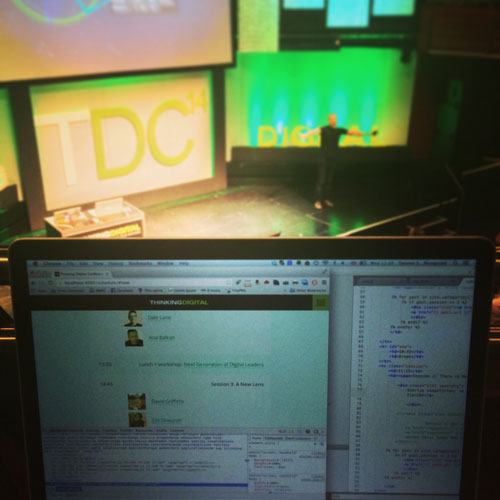
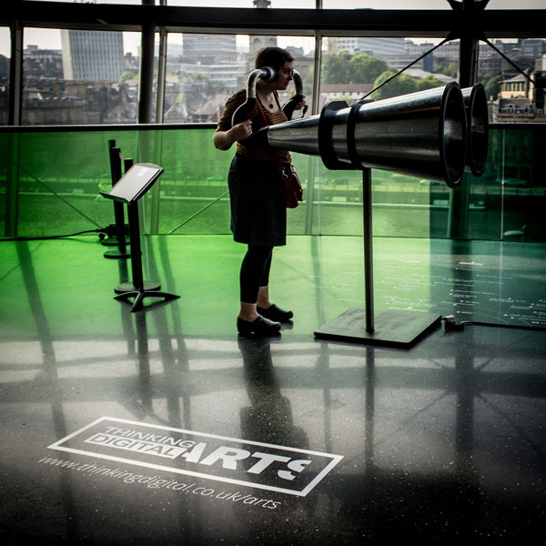
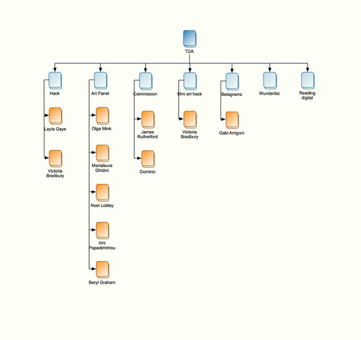

Thinking Digital is a conference that focuses on finding inspiration through new creative digital technologies, however after running for 7 years, the Thinking Digital Conference (TDC) brand and website no longer represented the contemporary event that it is. Dated design, clunky UX, outdated and unstructured content were some of the reasons why founder, Herb Kim, asked me to step in as creative director to help the conference live up to its name - Thinking Digital.
Wow! Your site really did the trick! It's great working with you.
Herb Kim, Founder
Standing out from the crowd
Example from the old brand
The world is saturated with tech conferences and I wanted TDC to stand out. The original TDC brand epitomised the visual depiction of 'digital' in a post Matrix era, with neon green on a black background and a squid like logo. To help modernise the brand, I added a vibrant secondary colour palette and suggested image treatment to make the imagery more exciting.
I am a strong believer in delivering only the necessary content at any given time, and then iterating when new information is required. To make this possible, the site is built as static pages using Jekyll, and is quick and easy to update and deploy.
Whilst I was still awaiting information on who would be filling this year's speaker slots, I directed a new content strategy that used videos from previous years, original photography (most of them my own shots) and testimonials from previous attendees to showcase what the conference is all about on a one page site. By stripping back the content and omitting all outdated, untimely or unnecessary information, visitors to the site were able to instantly get a quick and compelling snapshot of what the conference is all about, enabling them to assess if it would suit them to attend. If yes, I wanted to funnel the user to the ticket purchasing which was then quick, smooth and trustworthy meaning the ticket sales rocketed on launch day and the overall interest has been higher than expected.
As soon as the first set of 2014 speakers were ready, I added a speaker navigation to the site, and when we were nearing the event I added in the schedule, directions, information about the venue, hotel, parking and parties.
Now that the 2014 conference has concluded, I'm focussing the site's content on the strong speaker alumni by turning the website into a hub for reliving all the past conferences. This ensures that the website always contains relevant content between conferences, and not a dated schedule or parking information. In order to do this, I'm turning the speaker profile pages into individual alumni profiles where all that particular speaker's talks can be embedded.
Technical approach
The site is (of course) built with a mobile first approach, responsive to fit various screen sizes, it uses many nice CSS touches for new browsers, and also degrades gracefully down to not-so-new browsers. I write Sass to ensure my sites are scalable with a DRY approach to be able to amend quickly and update often. I optimise for retina displays, but also make sure that Internet Explorer users get a good experience. I make sure text is legible, both by choosing suitable sizes and with enough contrast in the colour. I optimise my code for quick loading, use icon fonts wherever appropriate and compress images to just a high enough quality, but small enough file size to not have to wait for them to load.

Aral did his thing on stage, and ran over by about 10 minutes, whilst I updated the timeslots from the sideline.
The conference sold out with time to spare. I made a schedule based on a provisional plan, however as conferences typically run over, time slots change and speakers exchange slots due to various reasons, I needed to be able to update on the go.
I deployed new timeslots as requested by the production team, and by adding a #now to the URL, that anchored down the page, the programme was always up to date and it was super easy to see who was on stage next. It was really well received by both staff and delegates.
Thank you to our amazing design team Torunn & Emilia. We couldn't do #TDC14 without you guys @fuselagetown@emiliaf.
— ThinkingDigital Conf (@ThinkingDigital) May 12, 2014
Thinking Digital Arts
I was also asked to brand the new Arts programme, making a logo that incorporates the original TDC brand, as well as giving ART more prominence.
Ideas and workings for the Arts logo

Finished logo in situ at Sage Gateshead. Source: Flickr
I explored many routes for the logo, to design a solution that could be used both big and bold in window displays, and in smaller spaces like Twitter avatars etc. I think the final result represents both the arts and the digital audience, incorporates all the elements, but is simple enough to not be cluttered.
Early sitemap workings

The Arts website was a sub section of the main conference site which aimed to drive a new audience to Thinking Digital. The programme was hugely complicated, with many different stakeholders and contributors, so for an attendee to be able to understand what was going on at what time, an information architecture workshop with the program director was required.
The Arts page is built on the same concept as the main website; one slide per topic, with nice, big, illustrative imagery so that the visitor can quickly gain the overview of the programme and follow links out to individual event pages with signups. The programme was a huge success, and will be returning in 2015.